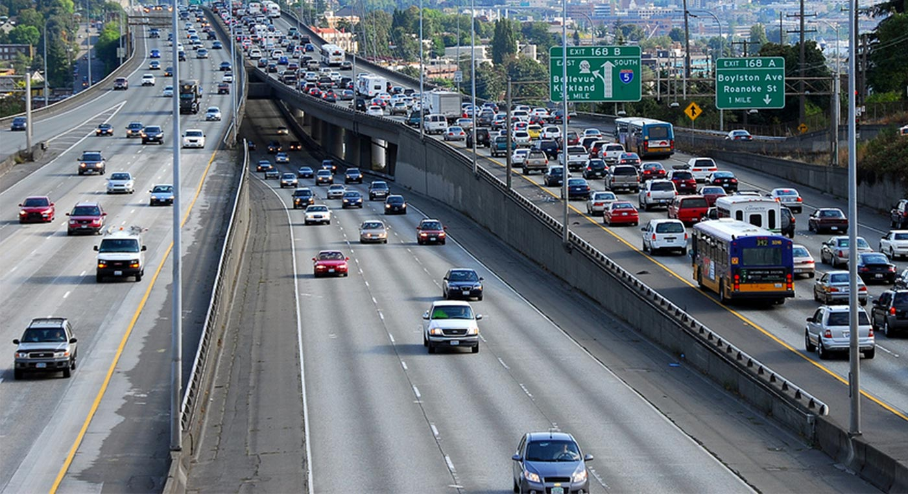
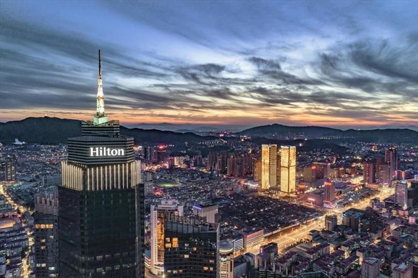
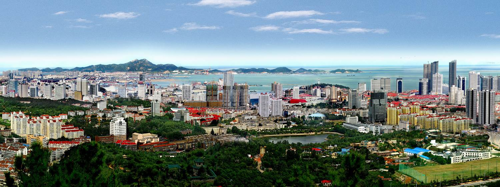

白偉良：
很多人要他們自己做的城市，我覺得一個城市一定要方便的交通工具，名勝古蹟和好好的保護環境。我覺得這一些方面可以幫我們好好做個不會傷害環境的城市。所以，這是我想的城市... 在我想要做的城市，方便的交通工具是一個很重要的方面，為什麼呢？因為人一定要去他們一定要取得地方。在我的城市，我們會有用電的巴士，所以我們可以帶很多人到他們想要去的地方。我們也要加自行車，所以我們不一定要用太多電。呢麼，我們會在哪兒可以拿到點？為了保護我們的環境，我們會用再生能源來發電。例如太陽能板，熱能，等等。在一座城市，我覺得名勝古蹟是一個很重要的方面，因為我們可以吸引遊客和招待我們的當地人。例如，我們可以在海邊放沙灘，放一個遊樂園，一些有名的餐廳，歷史古蹟，等等。 那麼，這是我想要的城市。我覺得名勝古蹟，方便的交通工具和一定要保護環境，讓它乾淨一點。你呢？你想要的城市是什麼？為什麼？
馨美：
我的理想城市可能太完美了，不可能是真的。它會有非常乾淨的環境，清澈的水和許多景點。它是一個非常現代的城市。 我的城市將以可持續能源為動力，我理想的城市的能源全部都是可再生能源，如太陽，風能，水能或能源作物。這將減少城市的污染。這個城市裡的所有垃圾都會被回收利用，你不會像香港那樣在街上看到垃圾。我的城市會有一些湖泊，一些海洋，而且都是天然的。我的城市將成為世界上最受歡迎的旅遊目的地，並有充足的理由 - 太陽，海洋和美麗的島嶼。 我理想中的城市有很多食物。食物從不同國家運來的，很安全沒有農藥。城市裡也有很多不同的商場，商場裡有很多不同的品牌。 每個住在我的城市的人都會很友善。來自世界各地的人會有不同的文化。我的城市裡的每個人都會在日常生活中互相幫助。不同文化之間不會有任何爭鬥，每個人都會成為朋友，政府會做出正確的決定。
權秀禧
首先，我希望理想城市是一個沿海城市，夏天溫暖，冬天涼爽，氣候溫和。 其次，我希望這個理想城市的人口密度和洛杉磯一樣，人們可以選擇住在郊區的大房子裡，也可以選擇住在市中心的高樓裡，不要像香港那麼擁擠。 第三方面我想說說環境衛生，我理想中的城市應該像新加坡一樣，人們不會隨地扔垃圾。城市裡每條路上都有分類垃圾箱，讓人們養成垃圾分類的好習慣，也能回收生活垃圾，提高廢物利用的效率。 第四方面我希望理想城市中有環保和現代化的交通工具。我希望設計一種超級巴士，可以使用太陽能來發電，車身設計成移動的隧道，隧道下面可以讓汽車走，上面有空間裝多一些的人。然後這個超級巴士在軌道上走，不會影響路上的交通。 最後，我希望這個理想城市的綠化率高一些，道路兩旁滿滿都是樹木，街頭到處都是小花園、小草地，還有五顏六色的的花朵，形成一個美麗、整潔的綠色花園城市。